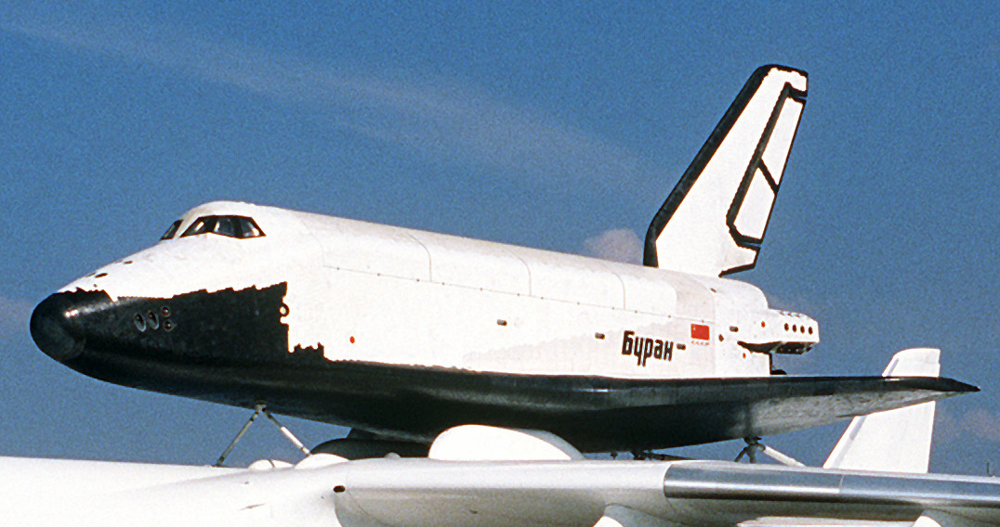

November 15, 1988 - the first and only Buran space flight in automatic mode; The only orbital launch of a Buran-class orbiter occurred at 03:00:02 UTC on 15 November 1988 from Baikonur Cosmodrome launch pad 110/37. Buran was lifted into space, on an uncrewed mission, by the specially designed Energia rocket. The automated launch sequence performed as specified, and the Energia rocket lifted the vehicle into a temporary orbit before the orbiter separated as programmed. After boosting itself to a higher orbit and completing two orbits around the Earth, the ODU engines fired automatically to begin the descent into the atmosphere, return to the launch site, and horizontal landing on a runway.
- Length: 36.37 m (119.3 ft);
- Wingspan: 23.92 m (78.5 ft);
- Length - 19 m (62.3 ft);
- Payload bay length: 18.55 m (60.9 ft);
- Payload bay diameter: 4.65 m (15.3 ft);
